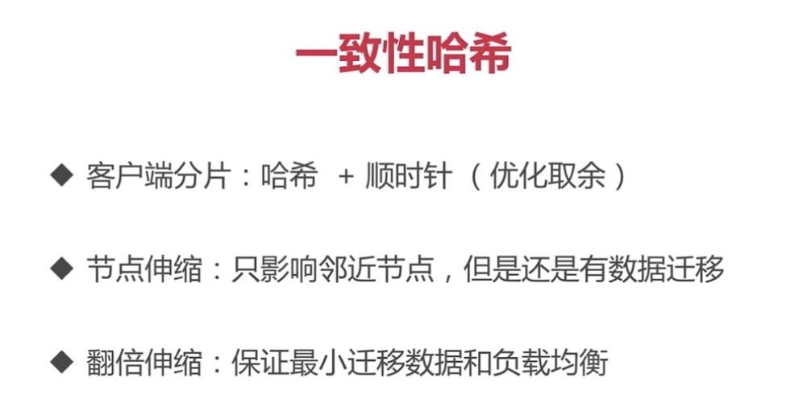
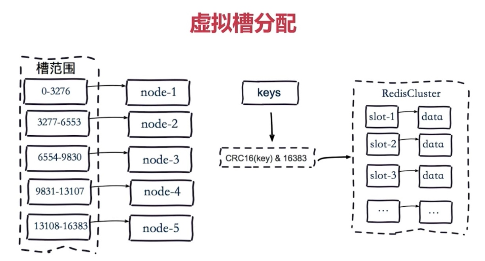
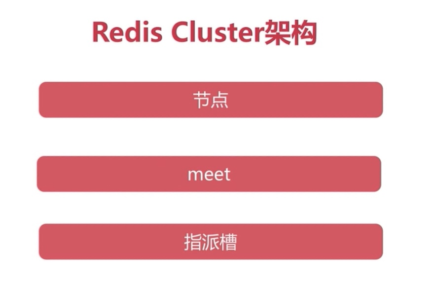
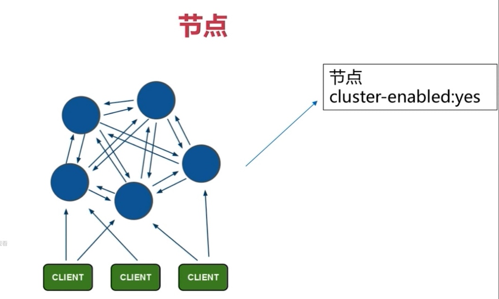

多倍扩容

- 引起50%的数据迁移
- 客户端分片：哈希+取余
- 节点伸缩：数据节点关系变化，导致数据迁移
- 迁移数量和添加节点数量有关：建议翻倍扩容
一致性hash

- 
虚拟槽分区

- 
集群架构
Redis集群架构
- 
- 节点
- 
- meet

- 槽

客户端与槽
cluser特性
安装
redis-cli -h $master -p 6379 cluster meet $master 6380
redis-cli -h $master -p 6379 cluster meet $node1 6379
redis-cli -h $master -p 6379 cluster meet $node1 6380
redis-cli -h $master -p 6379 cluster meet $node2 6379
redis-cli -h $master -p 6379 cluster meet $node2 6380
#!/bin/bash
master=192.168.31.186
node1=192.168.31.224
node2=192.168.31.125
start=$1
last=$2
port=$4
h=$3
ip=""
case $h in
"master") ip=$master;;
"node1") ip=$node1;;
"node2") ip=$node2;;
esac
for slot in `seq ${start} ${last}`
do
echo "slot:${slot}}"
redis-cli -h ${ip} -p ${port} cluster addslots ${slot}
done
./slot.sh 0 5461 master 6379 && ./slot.sh 5462 10922 node1 6379 && ./slot.sh 10923 10683 node2 6379
redis-cli -p 6379 cluster replicate 1da43f4f45d110b849bdfbc0fc55dc311fa69a76
redis-cli -p 6380 cluster replicate 261b726a6cafacddbf8f23596c738bdf4a30f085
redis-cli -c -p 6379
Redirected to slot [4554] located at 192.168.31.186:6379
查看节点 redis-cli -p 6380 cluster nodes
查看槽 redis-cli -p 6380 cluster slots
查看信息 redis-cli -p 6380 cluster info
一键创建集群
//启动节点
master redis-server ./redis-master_6379.conf \
&& redis-server ./redis-master_6380.conf
node1 redis-server ./redis-master_6379.conf \
&& redis-server ./redis-master_6380.conf
node2 redis-server ./redis-master_6380.conf \
&& redis-server ./redis-master_6381.conf
//创建集群
redis-cli --cluster create --cluster-replicas 1 \
$master:6379 $master:6380 \
$node1:6379 $node1:6380 \
$node2:6380 $node2:6381